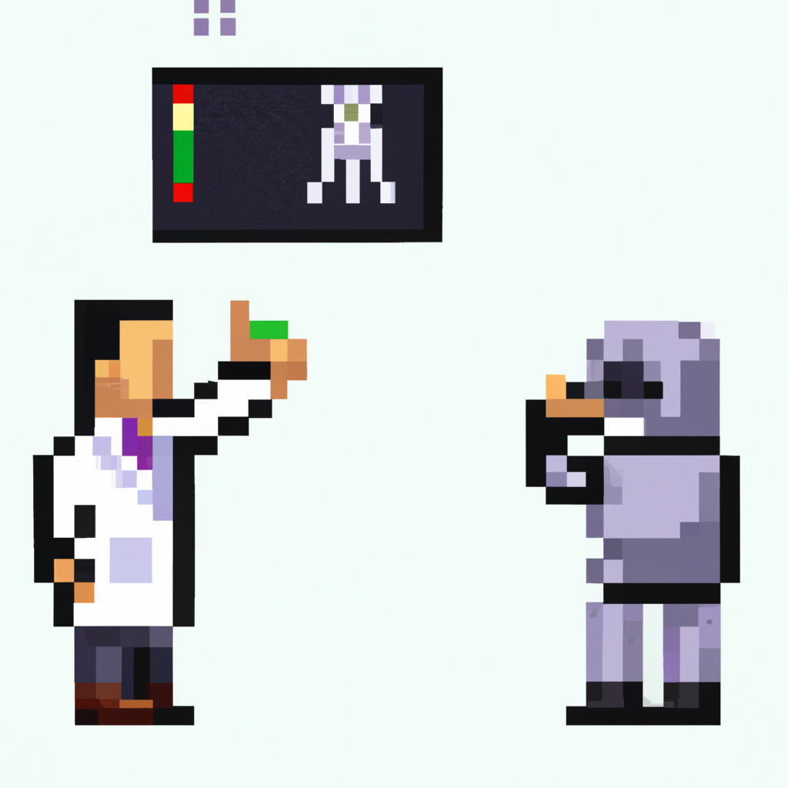

Why AI will never replace the radiologist
Recently, there has been a lot of buzz around the potential of AI and machine learning to revolutionize the healthcare industry. In particular, some have suggested that machine learning could be used to automate the diagnosis of medical imaging, such as X-rays and CT scans.
While machine learning can be a great tool to help radiologists diagnose medical images, it is important to remember that it will never completely replace the radiologist. This is because AI algorithms are not yet able to make complex decisions in the same way that a human radiologist can.
For example, AI algorithms may be able to detect the presence of a tumor in an X-ray image, but it may not be able to make a judgement about whether or not the tumor is malignant or benign. This is something that only a human radiologist can do, as they can take into account other factors such as the patient’s medical history and prior imaging results.
Furthermore, AI algorithms need to be trained on large datasets of images in order to be effective. This means that they may be limited in terms of their ability to recognize rare or unusual conditions. Human radiologists, on the other hand, have the experience and expertise to be able to recognize these rarer conditions.
In conclusion, while AI and machine learning have the potential to revolutionize the healthcare industry, they will never completely replace the radiologist. AI algorithms cannot yet make complex decisions in the same way that a human radiologist can, and they may be limited in their ability to recognize rare or unusual conditions. Therefore, it is important to remember that radiologists will always have an important role in the diagnosis of medical imaging.